File: 000570.gt.txt (if the image is defective, simply delete all Arabic text and the line will be excluded)
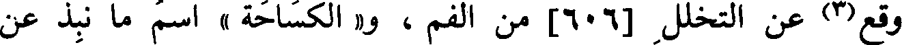
وقع(3) عن التخلل [606] من الفم ، و« الكساحة » اسم ما نبذ عن
File: 000571.gt.txt (if the image is defective, simply delete all Arabic text and the line will be excluded)
الكسح .
File: 000572.gt.txt (if the image is defective, simply delete all Arabic text and the line will be excluded)
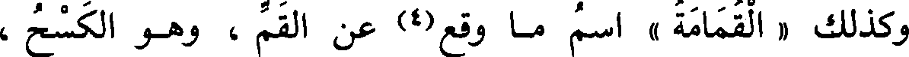
وكذلك « القمامة » اسم ما وقع(4) عن القم ، وهو الكسح ،
File: 000573.gt.txt (if the image is defective, simply delete all Arabic text and the line will be excluded)
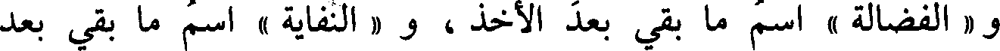
و « الفضالة » اسم ما بقي بعد الأخذ ، و « النفاية » اسم ما بقي بعد
File: 000574.gt.txt (if the image is defective, simply delete all Arabic text and the line will be excluded)
الاختيار .
File: 000575.gt.txt (if the image is defective, simply delete all Arabic text and the line will be excluded)
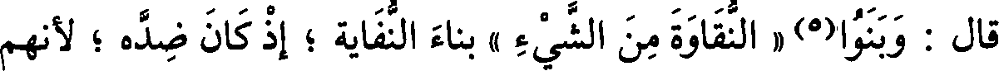
قال : وبنوا(5) « النقاوة من الشيء » بناء النفاية ؛ إذ كان ضده ؛ لأنهم
File: 000576.gt.txt (if the image is defective, simply delete all Arabic text and the line will be excluded)
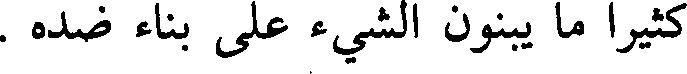
كثيرا ما يبنون الشيء على بناء ضده .
File: 000577.gt.txt (if the image is defective, simply delete all Arabic text and the line will be excluded)
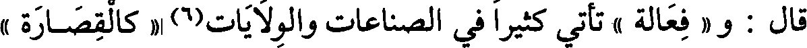
قال : و « فعالة » تأتي كثيرا في الصناعات والولايات(6) « كالقصارة »
File: 000578.gt.txt (if the image is defective, simply delete all Arabic text and the line will be excluded)
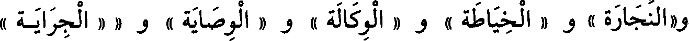
و« النجارة » و « الخياطة » و « الوكالة » و « الوصاية » و « « الجراية »
File: 000579.gt.txt (if the image is defective, simply delete all Arabic text and the line will be excluded)
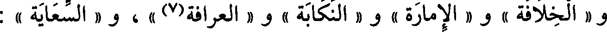
و « الخلافة » و « الامارة » و « النكابة » و « العرافة(7) » ، و « السعاية » :
File: 000580.gt.txt (if the image is defective, simply delete all Arabic text and the line will be excluded)
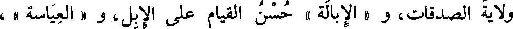
ولاية الصدقات، و « الإبالة » حسن القيام على الإبل، و « العياسة » ،
File: 000581.gt.txt (if the image is defective, simply delete all Arabic text and the line will be excluded)
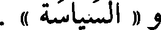
و « السياسة » .
File: 000582.gt.txt (if the image is defective, simply delete all Arabic text and the line will be excluded)
باب فعل وفعال
File: 000583.gt.txt (if the image is defective, simply delete all Arabic text and the line will be excluded)
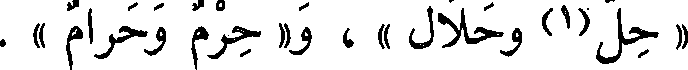
« رجل(1) وحلال » ، و« حرم وحرام » .
File: 000584.gt.txt (if the image is defective, simply delete all Arabic text and the line will be excluded)
باب فعل وفعال
File: 000585.gt.txt (if the image is defective, simply delete all Arabic text and the line will be excluded)
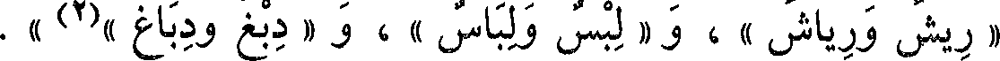
« ريش ورياش » ، و « لبس ولباس » ، و « دبغ ودباغ »(2) » .
File: 000586.gt.txt (if the image is defective, simply delete all Arabic text and the line will be excluded)
باب (3) ما جاء على فعالة فيه (4) لغتان
File: 000587.gt.txt (if the image is defective, simply delete all Arabic text and the line will be excluded)
فعالة وفعالة
File: 000588.gt.txt (if the image is defective, simply delete all Arabic text and the line will be excluded)
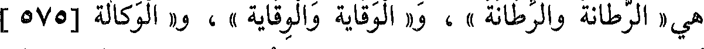
هي« الرطانة والرطانة » ، و« الوقاية والوقاية » ، و« الوكالة [575 ]
File: 000589.gt.txt (if the image is defective, simply delete all Arabic text and the line will be excluded)
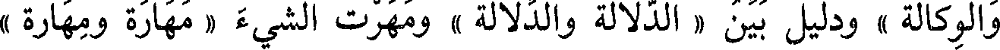
والوكالة » ودليل بين « الدلالة والدلالة » ومهرت الشيء « مهارة ومهارة »
File: 000590.gt.txt (if the image is defective, simply delete all Arabic text and the line will be excluded)
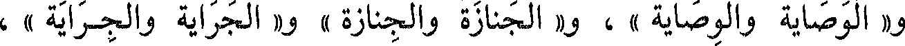
و« الوصاية والوصاية » ، و« الجنازة والجنازة » و« الجراية والجراية » ،
File: 000591.gt.txt (if the image is defective, simply delete all Arabic text and the line will be excluded)
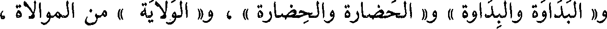
و« البداوة والبداوة » و« الحضارة والحضارة » ، و« الولاية » من الموالاة ،
File: 000592.gt.txt (if the image is defective, simply delete all Arabic text and the line will be excluded)
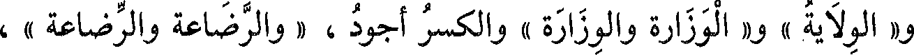
و« الولاية » و« الوزارة والوزارة » والكسر أجود ، « والرضاعة والرضاعة » ،
File: 000593.gt.txt (if the image is defective, simply delete all Arabic text and the line will be excluded)
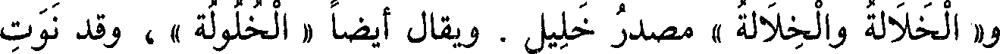
و« الخلالة والخلالة » مصدر خليل . ويقال أيضا « الخلولة » ، وقد نوت
File: 000594.gt.txt (if the image is defective, simply delete all Arabic text and the line will be excluded)
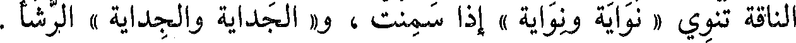
الناقة تنوي « نواية ونواية » إذا سمنت ، و« الجداية والجداية » الرشأ .
File: 000595.gt.txt (if the image is defective, simply delete all Arabic text and the line will be excluded)
باب ما جاء(1) فيه لغتان من حروف مختلفة الأبنية
File: 000596.gt.txt (if the image is defective, simply delete all Arabic text and the line will be excluded)
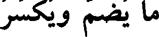
ما يضم ويكسر
File: 000597.gt.txt (if the image is defective, simply delete all Arabic text and the line will be excluded)
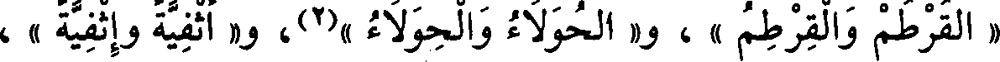
« القرطم والقرطم » ، و« الحولاء والحولاء »(2)، و« أثفية وإثفية » ،
File: 000598.gt.txt (if the image is defective, simply delete all Arabic text and the line will be excluded)
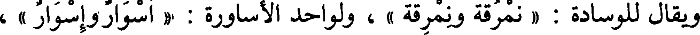
ويقال للوسادة : « نمرقة ونمرقة » ، ولواحد الأساورة : « أسوار وإسوار » ،
File: 000599.gt.txt (if the image is defective, simply delete all Arabic text and the line will be excluded)
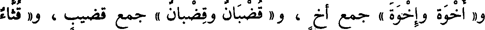
و« أخوة وإخوة » جمع أخ ، و« قضبان وقضبان » جمع قضيب ، و« قثاء
To Save: `Ctrl+s`, make sure to choose `Webpage, complete`!